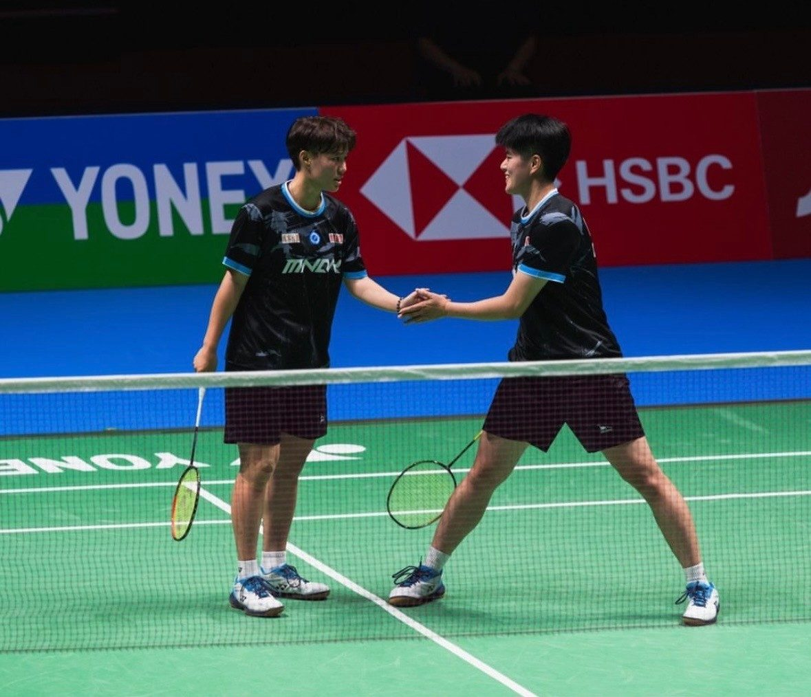
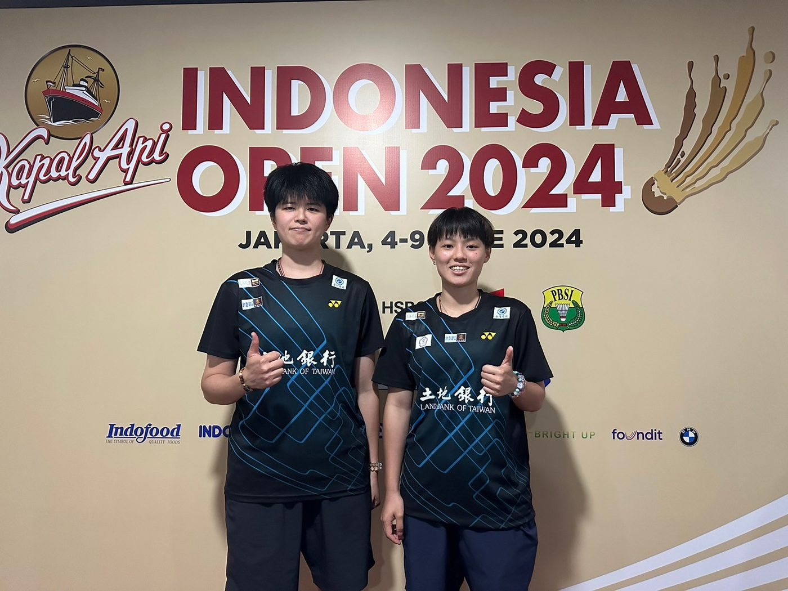

01我的故事
大家好！我是鄭育沛。
我與我的搭檔孫昱瑆，我們於2024年7月成為羽球職業運動的自由球員，為了達成我們這個組合的目標，我們不斷持續努力認真練習，到國立體育大學與學校選手們共同訓練向李洋教練學習，並積極尋找企業贊助，支持我們出國比賽。


大家好！我是鄭育沛。 我與我的搭檔孫昱瑆，我們於2024年7月成為羽球職業運動的自由球員，為了達成我們這個組合的目標，我們不斷持續努力認真練習，…
大家好！我是鄭育沛。
我與我的搭檔孫昱瑆，我們於2024年7月成為羽球職業運動的自由球員，為了達成我們這個組合的目標，我們不斷持續努力認真練習，到國立體育大學與學校選手們共同訓練向李洋教練學習，並積極尋找企業贊助，支持我們出國比賽。


歷屆成績 · 更新於 2025/12/12
2024年熊本大師賽
訓練與參賽計畫
（尚未提供）
世界排名女雙提升至25名內。
我想達到…
進行高強度專項體能訓練、雙打運動技術訓練及基本球路、組合球及多球訓練。
114年 115年
0113-0117 一周 0302-0320 三周
0224-0307 兩周 0406-0424 三周
0414-0502 三周 0511-0529 三周
0526-0530 一周 0615-0703 三周
0623-0704 兩周 0713-0717 一周
0721-0725 一周 0817-0828 兩周
0811-0829 三周 0928-1002 一周
0929-1010 兩周 1221-0101 兩周
1027-1031 一周
1208-1226 三周
進行中低強度專項體能訓練，著重增加比賽技戰綜合術訓練及個人技術增強。
114年 115年
1230-0112 兩周 1229-0201 五周
0120-0202 兩周 0720-0802 兩周
0310-0323 兩周 0831-0920 三周
0505-0525 三周 1005-1025 三周
0602-0615 兩周 1116-1206 三周
0707-0720 兩周
0728-0803 一周
0901-0914 兩周
1013-1019 一周
1103-1116 兩周
1229-0111 兩周
將體能訓練改為進行非主項運動，調整肌肉，並著重拉筋伸展按摩等肌肉放鬆恢復；專項運動技術以基本球、個人技術補強、雙打3-5拍球路訓練、雙打發接發前三拍為主。
114年 115年
0203-0221 三周 0202-0227 四周
0324-0411 三周 0323-0403 兩周
0616-0620 一周 0417-0508 兩周
0804-0808 一周 0601-0612 兩周
0915-0926 兩周 0706-0710 一周
1020-1024 一周 0803-0814 兩周
1117-1205 三周 0921-0925 一周
1026-1030 一周
1207-1218 兩周
加強心肺耐力、敏捷、協調性、關節活動度訓練為主要項目。肌力、肌耐力為次要項目。
以基本羽球能力技術、戰術應用專項技術及比賽專項動作。
戰術的主控思想意識、戰術知識及執行戰術行為能力為主，模擬比賽場上戰術變化。
進行對手影片情蒐分析，並畫出球路圖，準備比賽時的戰術策略，並在平時練習應用，模擬比賽情境。
需求項目與數量（依官方頁面）
| 選手零用金 | NT$ 312,000 |
| 參賽旅運費 | NT$ 1,398,600 |
| 經費需求合計 | NT$ 1,710,600 |
| 肌貼 | 10盒 |
標示「不公開」者為官方頁面未揭露之欄位。
網路公開搜尋結果，均附原始出處
申請者於體育署捐贈媒合平臺自填的相關連結。
出處：https://bwfbadminton.com/player/67789/cheng-yu-pei申請者於體育署捐贈媒合平臺自填的相關連結。
出處：https://www.nownews.com/news/6500022?srsltid=AfmBOoqiqLMn7ZhIaUg2f9fp1zJA2J9t_u3vFogGLGUXA_LJdT0DZiyO鄭育沛為臺灣羽球選手，以女雙、混雙為主，曾代表臺南市在全運會女雙奪銅。
出處：https://zh.wikipedia.org/zh-tw/%E9%84%AD%E8%82%B2%E6%B2%9B羽球選手鄭育沛的Instagram帳號。
出處：https://www.instagram.com/cheng_yu_pei/2026年第二次全國羽球排名賽女子甲組雙打會外賽影片，鄭育沛與孫昱瑆搭檔出賽。
出處：https://www.youtube.com/watch?v=tOWLIDYFG-8